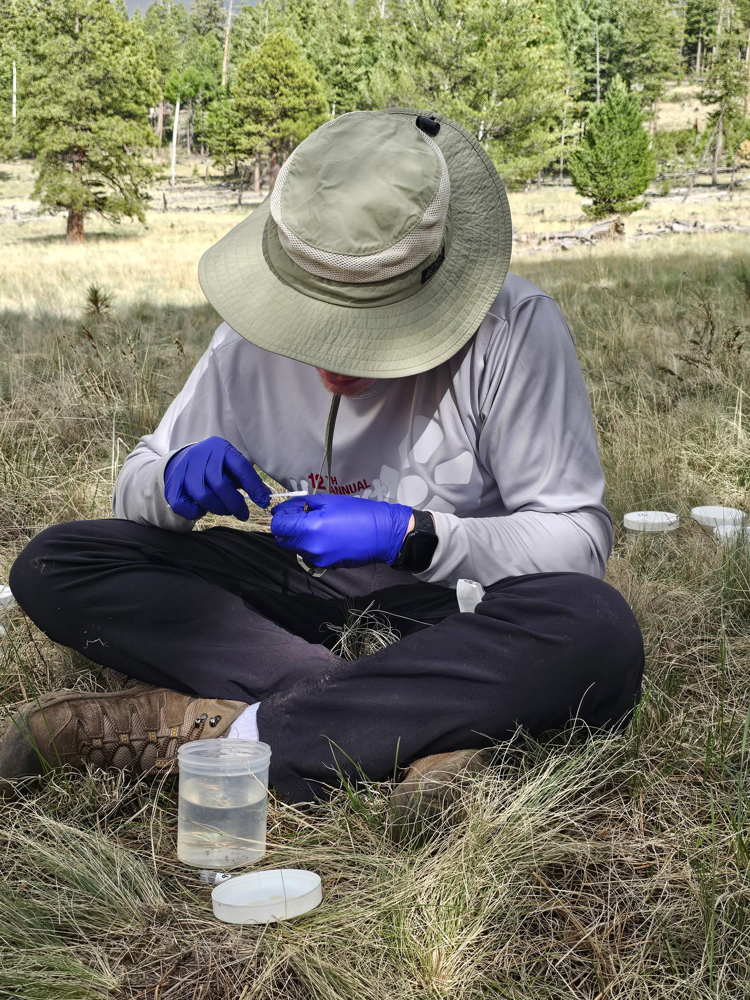

Modeling Ambystoma tigrinum virus across Arizona pond networks
I built a spatially explicit compartmental disease model in Python using epymorph to simulate Ambystoma tigrinum virus (ATV) transmission across connected tiger salamander pond networks. The model represents within-pond transmission, host life stages, seasonal adult migration, chronic carrier adults, and environmental forcing.
I also developed custom distance-based movement kernels and integrated daily PRISM climate data to examine how landscape connectivity and seasonal environmental conditions shape outbreak risk.
Scenario comparisons showed that severe outbreaks emerge when susceptible larvae, carrier adults, and favorable temperatures overlap seasonally.
